Gallery (the enhanced Chroma version of skin)
Windows 11 themes
Windows (dark) non-contrast theme:
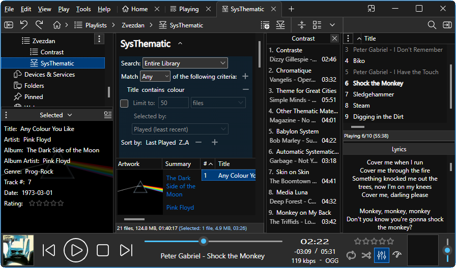
Windows (light) non-contrast theme:
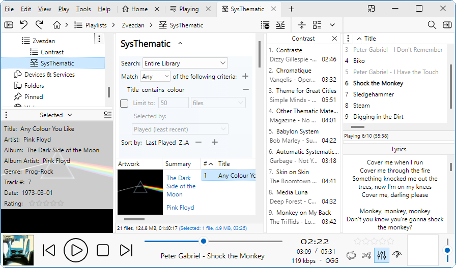
Aquatic:
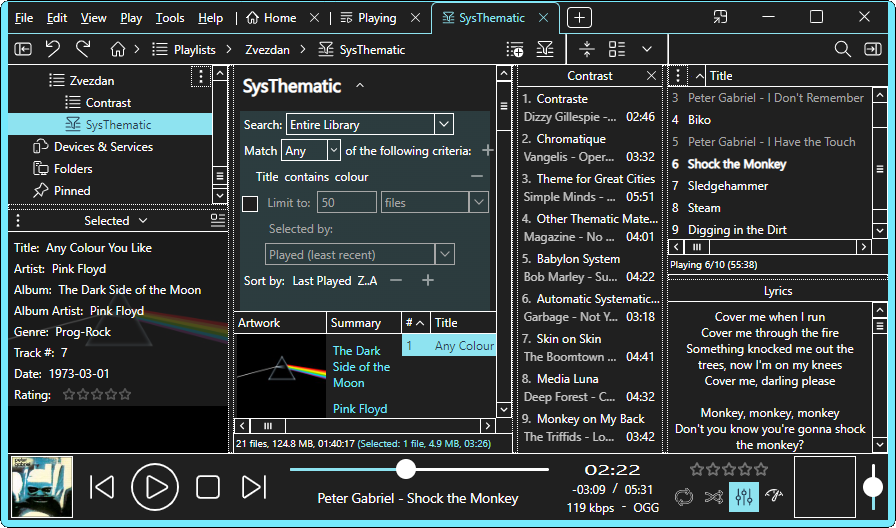
Desert:
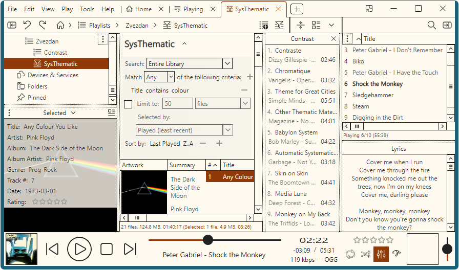
Dusk:
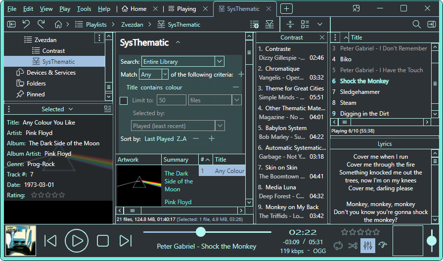
Night Sky:
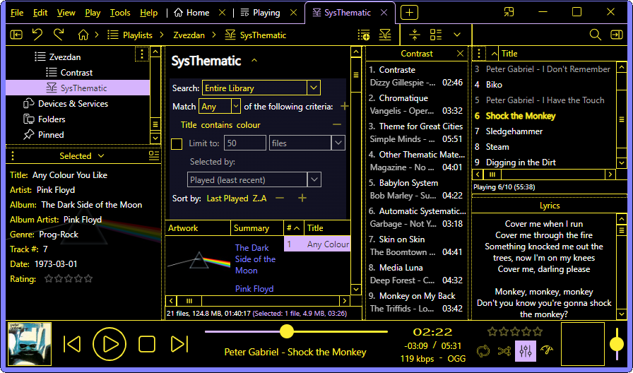
Windows 10 themes
High Contrast #1:

High Contrast #2 (should be avoided because of poor choice of colors regarding readability):

High Contrast Black:
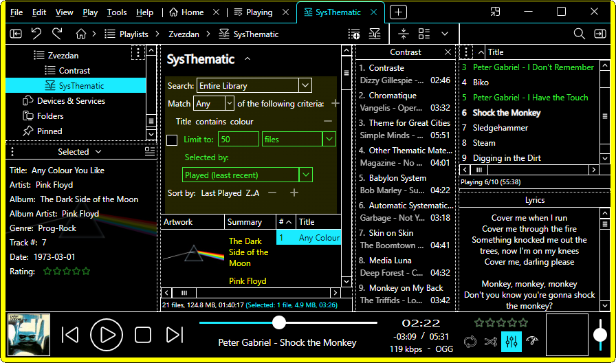
High Contrast White:
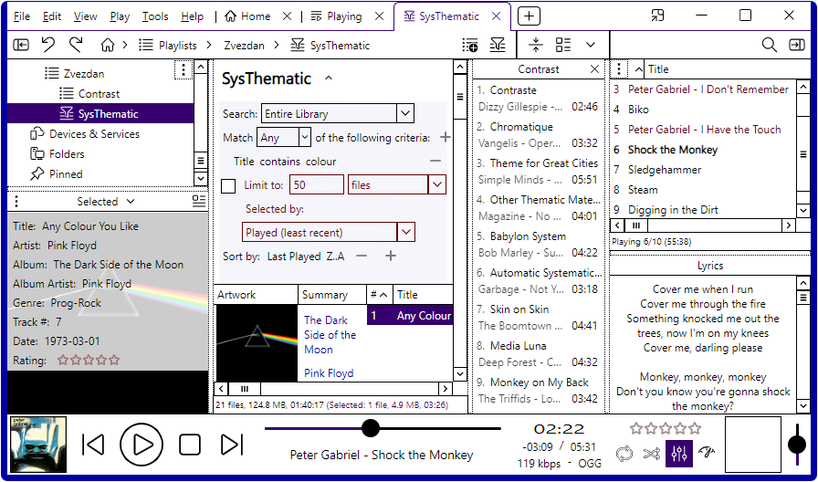
Custom themes (using triadic colors that are mutually the most distinguishable and have the greatest contrast ratio to the background color)
#1:
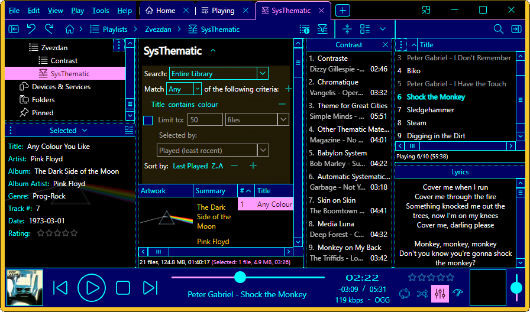
#2:
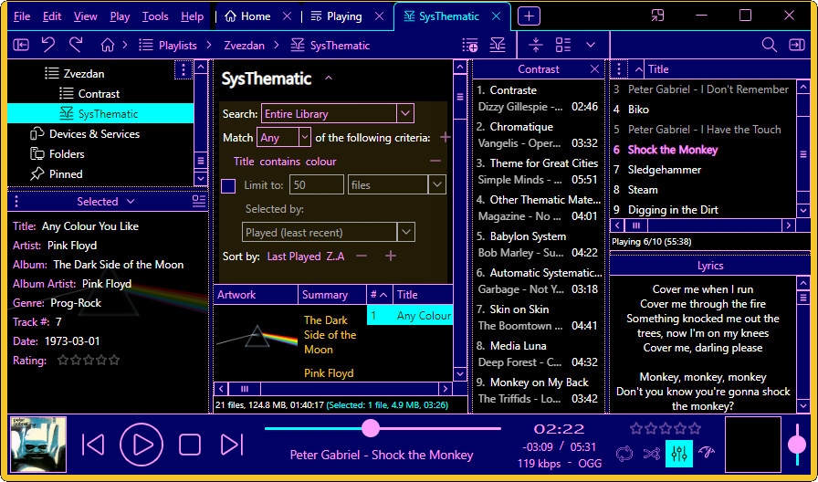
#3:
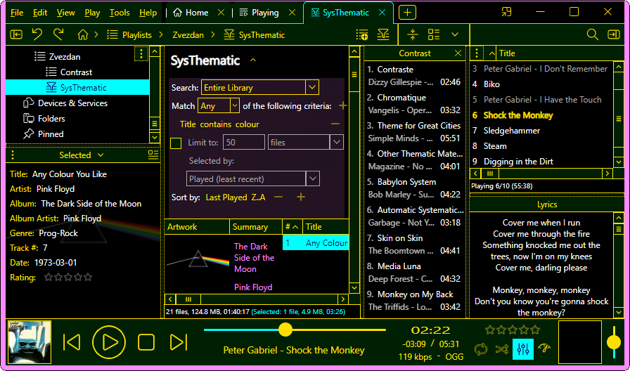
#4:
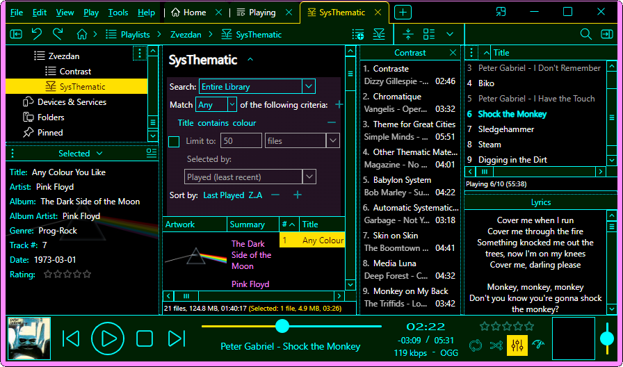
#5:
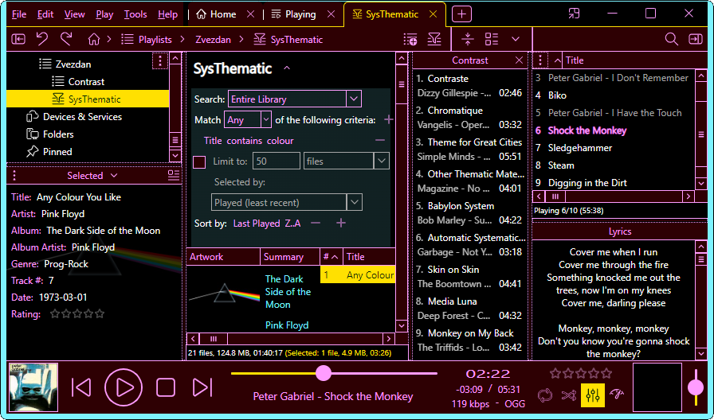
#6:
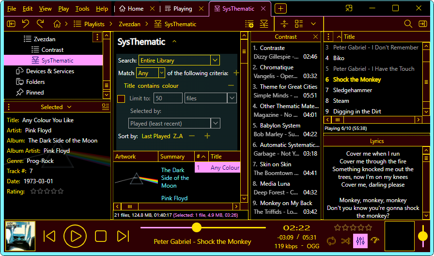
#7:
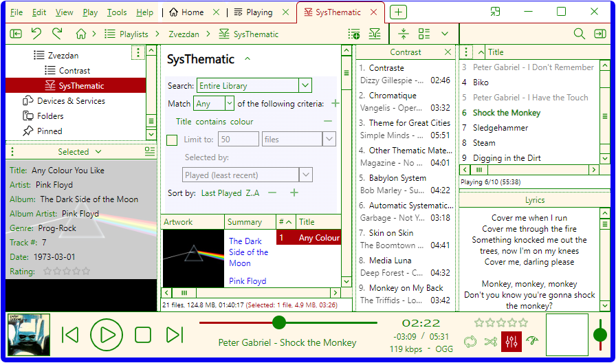
#8:
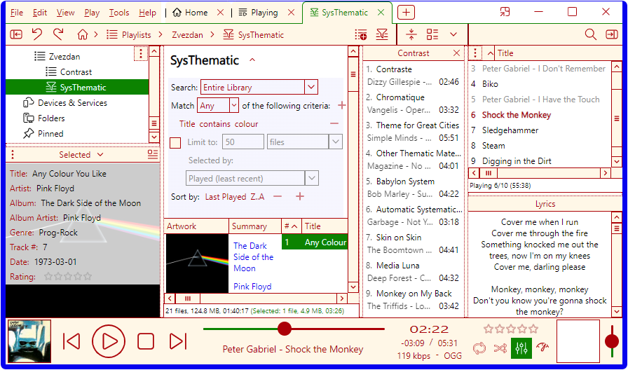